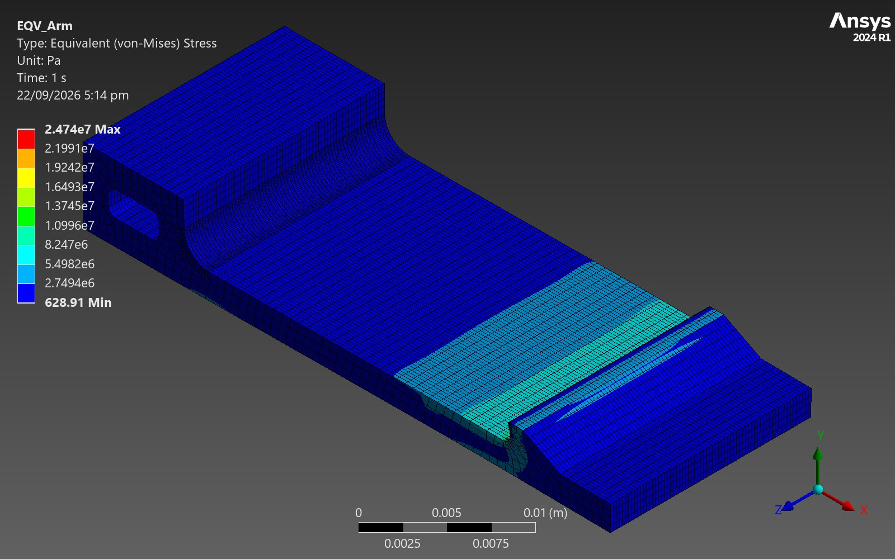
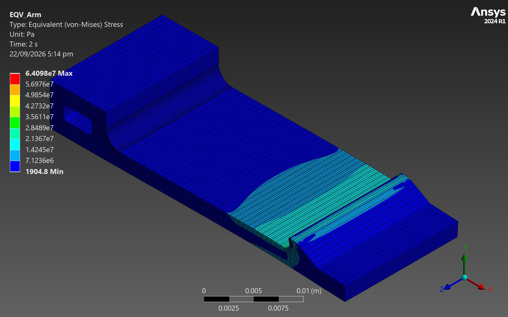
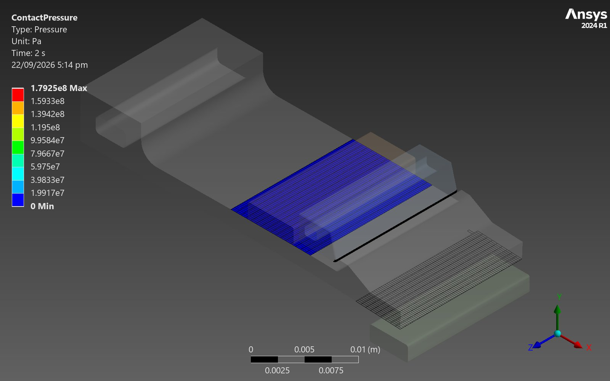
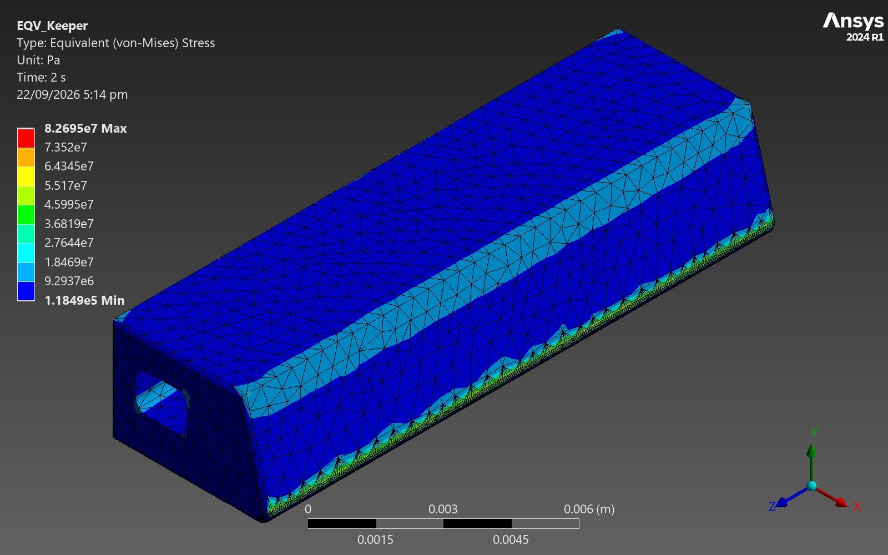
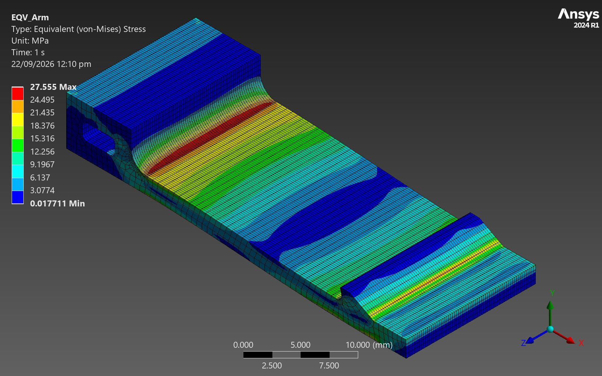
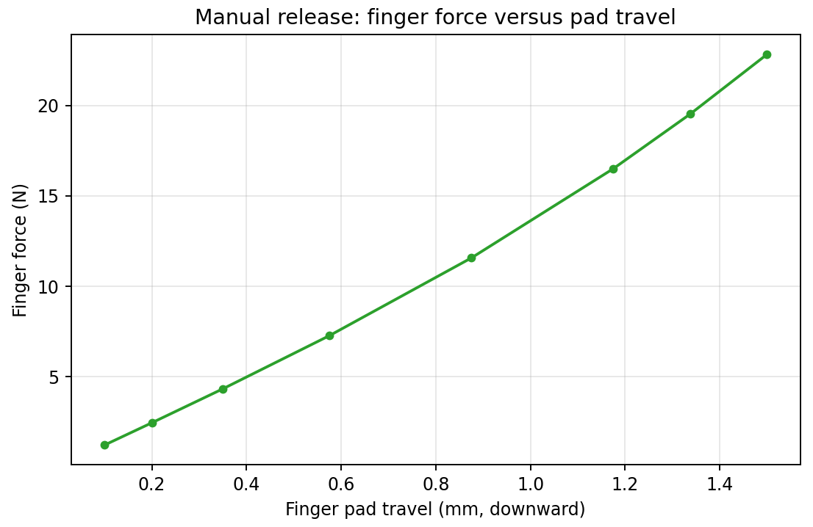
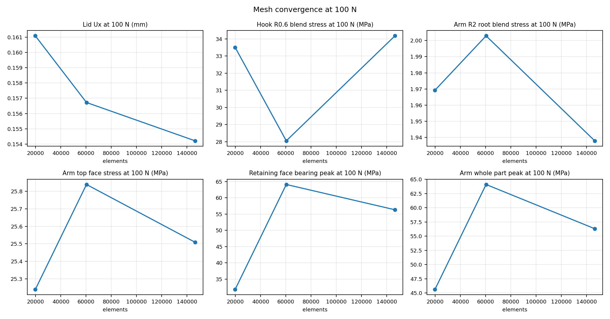
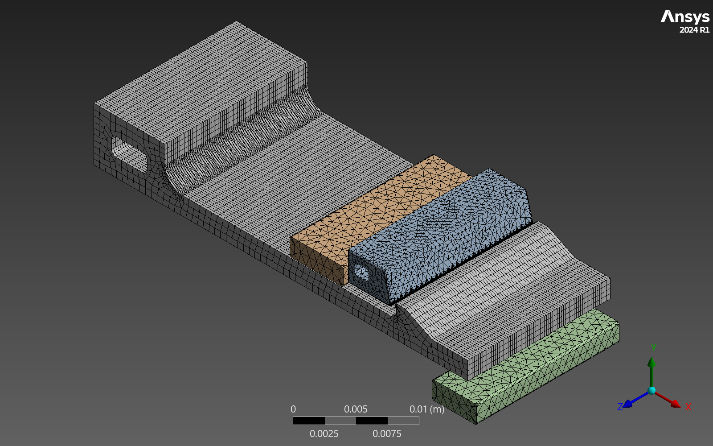

Elastic-by-Design Snap-Fit Latch: Mesh-Verified and Proven at 2.5× Service Load
- Solver
- SolidWorks + ANSYS Mechanical, nonlinear contact
- Verified by
- Three meshes, 20k to 146k elements
- Headline
- 6× marginat the 40 N service load
- Abuse load
- Engaged at 100 N, 2.5× service

Problem
A tool-free snap-fit lid latch on a portable equipment case has to do two things that pull against each other: flex elastically enough to snap closed and stay elastic under normal handling, while also holding the lid shut under an abuse load well above expected use, without the plastic hook yielding or the metal keeper deforming enough to let the lid pop open. This was a self-directed design study of exactly that latch: a moulded polycarbonate hook engaging a 17-4PH stainless keeper, sized against a regular-use force and an abuse-use force, with the question being whether the design holds a real margin at both, and where the model's own honesty runs out.
Method
The assembly was modelled in SolidWorks and solved in ANSYS Mechanical as a static structural nonlinear contact problem, loading the lid in the opening direction at two force levels: 40 N as the regular-use load and 100 N as the abuse-use load, roughly 2.5 times higher. Stresses were tracked at the three locations that decide the outcome: the polycarbonate hook's 0.6 mm blend radius, the plastic arm's 2 mm root blend, and the peak in the 17-4PH keeper. A three-level mesh study (coarse 19,809 elements, medium 60,343, fine 146,462) checked whether the reported numbers were a converged model result or a mesh artefact.
Validation
Global quantities, lid displacement and the arm root blend stress, converge cleanly across the mesh study to within a few percent. The local peak stresses at the hook blend and at the contact edge on the retaining face do not converge the same way: the contact-edge peak in particular approaches a line-contact condition, where mesh refinement keeps raising the peak rather than settling on a value, and this is stated plainly as a limitation rather than papered over with a single mesh's number. The hook blend and keeper peaks reported below are the medium-mesh values, bracketed against the coarse and fine results rather than treated as exact. A separate 150 N run was attempted to find where the latch actually releases; it stalled at 122 N because of contact-tracking convergence, not because the latch released, so no release load is claimed above 100 N.
Headline results
| Quantity | 40 N (service) | 100 N (abuse) |
|---|---|---|
| Hook 0.6 mm blend stress | 10.9 MPa | 28 MPa |
| Margin to yield (hook blend) | ≈6× | ≈2.3× |
| Metal keeper peak stress | - | 83 MPa (vs 1170 MPa proof) |
| Engagement overlap retained | full | 0.59 mm, latch stays engaged |
At the 40 N service load the hook blend runs at roughly a sixth of yield. At the 100 N abuse load, six times the reasoning changes to margin against release rather than margin against yield: the hook stress rises but the latch keeps 0.59 mm of engagement overlap, and the metal keeper sits at 83 MPa against a 1170 MPa proof stress, so the load path that could actually open the case under abuse is nowhere near its limit.
Results gallery






Figures



Limitations
- Local peak stresses at the hook blend and the retaining-face contact edge do not converge with mesh refinement across the three-level study; the contact-edge peak approaches a line-contact singularity and is not compared directly against yield.
- A 150 N run stalled at 122 N due to contact-tracking convergence, not latch release; no release load is claimed above the 100 N abuse case that was solved cleanly.
- These are static analyses only. No fatigue life, creep, temperature dependence or drop-impact certification is claimed.
- Material data are supplier-typical values for polycarbonate and 17-4PH, not guaranteed design allowables.